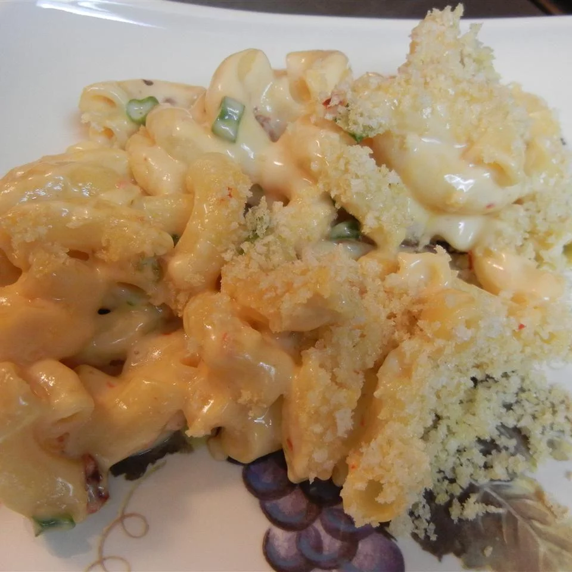

Mac and Cheese

Description
Adding chipotle chiles to this macaroni and cheese dish really adds a nice spicy, smoky kick.
Per Serving:758 calories; protein 34.7g; carbohydrates 74.1g; fat 36.5g; cholesterol 100.3mg; sodium 964.6mg.
Ingredients
- 1 (16 ounce) package elbow macaroni
- 1 (11 ounce) can condensed Cheddar cheese soup
- 1 (12 ounce) can evaporated milk
- 1 pound shredded Colby cheese
- 1 chipotle chile in adobo sauce, finely chopped
Steps
- Preheat oven to 350 degrees F (175 degrees C). Grease a 2-quart casserole dish.
- Bring a large pot of lightly salted water to a boil. Cook elbow macaroni in the boiling water, stirring occasionally until cooked through but firm to the bite, 8 minutes. Drain.
- Stir soup, evaporated milk, Colby cheese, and chipotle chile into the cooked pasta until well combined. Spoon mixture into the prepared casserole dish.
- Stir together panko bread crumbs and olive oil in a small bowl. Sprinkle bread crumb mixture over the top of casserole.
- Bake in the preheated oven until the top is browned and the casserole is bubbling, 25 to 30 minutes.